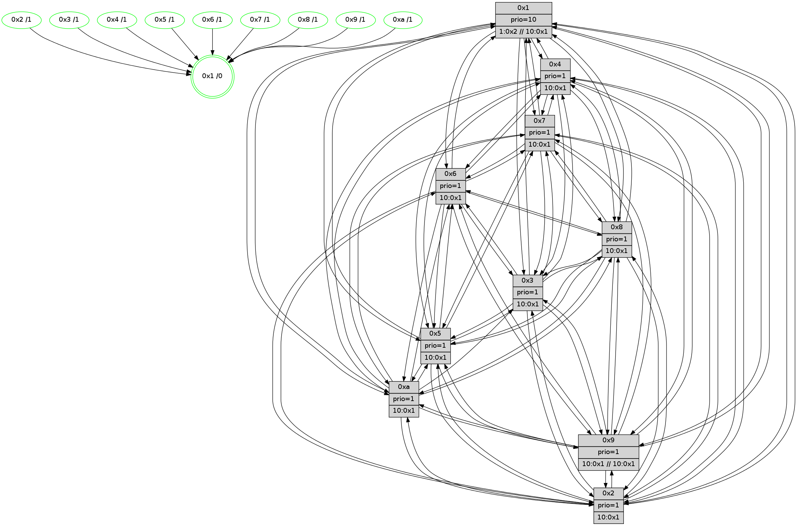

>> << IDX [start] -100 -25 -5 +0 +5 +25 +100 [510.349341154]
 Previous packets
----------------------------------------------------------------------
505.620551 beacon01(faad) #0 coord=01,02,03,04,05,06,07,0a,09,08 cycle=688.0ms assoc
-- color-indic=1 64 2c 26
505.630532 beacon02(faad) #0 coord=01,02,03,04,05,06,07,0a,09,08 cycle=688.0ms assoc 64 bf 17
505.640533 beacon03(faad) #0 coord=01,02,03,04,05,06,07,0a,09,08 cycle=688.0ms assoc 64 c5 5a
505.650533 beacon04(faad) #0 coord=01,02,03,04,05,06,07,0a,09,08 cycle=688.0ms assoc 64 b2 b0
505.660533 beacon05(faad) #0 coord=01,02,03,04,05,06,07,0a,09,08 cycle=688.0ms assoc 64 c8 fd
505.670534 beacon06(faad) #0 coord=01,02,03,04,05,06,07,0a,09,08 cycle=688.0ms assoc 64 46 2a
505.680533 beacon07(faad) #0 coord=01,02,03,04,05,06,07,0a,09,08 cycle=688.0ms assoc 64 3c 67
505.690540 beacon0a(faad) #0 coord=01,02,03,04,05,06,07,0a,09,08 cycle=688.0ms assoc 64 4d 6c
505.700539 beacon09(faad) #0 coord=01,02,03,04,05,06,07,0a,09,08 cycle=688.0ms assoc 64 c3 bb
505.710538 beacon08(faad) #0 coord=01,02,03,04,05,06,07,0a,09,08 cycle=688.0ms assoc 64 b9 f6
505.721755 [Hello(8): seq=269 sym=5,2,3,4,7,6,9,10,1 sysInfo=coloring-mode-on,ColoringModeIndicationCalled stat=5:12,1,5,3/2:6,3,4,3/3:5,2,4,4/4:12,2,3,2/7:11,4,7,2/6:3,3,7,2/9:14,2,5,2/10:10,0,2,1/1:12,3,9,0]
505.724926 [Hello(4): seq=326 sym=5,7,6,2,3,9,8,10,1 sysInfo=coloring-mode-on,ColoringModeIndicationCalled stat=5:3,1,6,4/7:11,5,7,1/6:0,4,5,2/2:11,3,3,3/3:12,2,5,3/9:0,0,0,0/8:0,3,6,2/10:15,2,3,1/1:2,4,11,0]
505.728514 [STC(1) #0.13 stable,to-color d=0]
505.730971 [Hello(2): seq=323 sym=4,5,7,6,3,9,8,1 sysInfo=coloring-mode-on,ColoringModeIndicationCalled stat=4:15,3,3,1/5:13,2,4,3/7:6,6,6,1/6:13,5,5,1/3:10,2,4,2/9:1,0,1,0/8:1,0,0,0/1:0,4,9,0]
505.734333 [Hello(9): seq=269 sym=5,2,3,4,7,6,8,10,1 sysInfo=coloring-mode-on,ColoringModeIndicationCalled stat=5:12,1,3,4/2:9,4,4,2/3:1,4,3,2/4:3,3,1,2/7:15,5,6,1/6:8,3,5,2/8:0,3,0,0/10:10,2,3,1/1:12,2,9,0]
505.738002 [Hello(10): seq=258 sym=6,3,2,8,9,5,7,4,1 sysInfo=coloring-mode-on,ColoringModeIndicationCalled stat=6:4,5,6,1/3:9,2,5,3/2:2,4,3,4/8:12,5,6,2/9:4,2,4,2/5:11,1,5,3/7:10,5,5,1/4:11,4,2,3/1:7,4,9,0]
505.742472 [Hello(3): seq=326 sym=1,7,6,2,4,8,9,10,5 sysInfo=coloring-mode-on,ColoringModeIndicationCalled stat=1:15,5,9,0/7:1,6,6,2/6:12,4,5,2/2:11,3,3,4/4:0,4,3,2/8:6,4,5,1/9:4,2,6,2/10:15,3,5,1/5:14,1,6,3]
505.746946 [Hello(5): seq=326 sym=7,6,4,3,1,9,8,10,2 sysInfo=coloring-mode-on,ColoringModeIndicationCalled stat=7:9,5,6,1/6:14,5,6,1/4:12,5,2,1/3:8,3,1,0/1:3,4,9,0/9:11,3,4,1/8:14,5,4,0/10:6,4,2,1/2:11,3,3,2]
505.752607 [Color(1) seq=6 @0:0 prio=10 >1.@2,1.@3,1.@4,1.@5]
----------------------------------------------------------------------
506.408683 beacon01(faad) #0 coord=01,02,03,04,05,06,07,0a,09,08 cycle=688.0ms assoc
-- color-indic=1 64 18 3e
506.418666 beacon02(faad) #0 coord=01,02,03,04,05,06,07,0a,09,08 cycle=688.0ms assoc 64 8b 0f
506.428667 beacon03(faad) #0 coord=01,02,03,04,05,06,07,0a,09,08 cycle=688.0ms assoc 64 f1 42
506.438666 beacon04(faad) #0 coord=01,02,03,04,05,06,07,0a,09,08 cycle=688.0ms assoc 64 86 a8
506.448668 beacon05(faad) #0 coord=01,02,03,04,05,06,07,0a,09,08 cycle=688.0ms assoc 64 fc e5
506.458666 beacon06(faad) #0 coord=01,02,03,04,05,06,07,0a,09,08 cycle=688.0ms assoc 64 72 32
506.468667 beacon07(faad) #0 coord=01,02,03,04,05,06,07,0a,09,08 cycle=688.0ms assoc 64 08 7f
506.478670 beacon0a(faad) #0 coord=01,02,03,04,05,06,07,0a,09,08 cycle=688.0ms assoc 64 79 74
506.488673 beacon09(faad) #0 coord=01,02,03,04,05,06,07,0a,09,08 cycle=688.0ms assoc 64 f7 a3
506.498671 beacon08(faad) #0 coord=01,02,03,04,05,06,07,0a,09,08 cycle=688.0ms assoc 64 8d ee
506.511858 [Hello(1): seq=235 sym=4,2,9,5,10,3,8,6,7 sysInfo=coloring-mode-on,ColoringModeRequestCalled stat=4:3,4,6,4/2:15,4,7,5/9:13,4,8,3/5:10,4,7,4/10:0,5,6,1/3:1,4,8,5/8:7,5,9,3/6:2,6,9,2/7:11,6,9,2]
506.514576 [Hello(7): seq=326 sym=2,3,5,6,4,8,9,10,1 sysInfo=coloring-mode-on,ColoringModeIndicationCalled stat=2:12,0,6,5/3:7,0,7,4/5:8,1,7,5/6:4,2,5,2/4:4,1,4,3/8:7,2,5,2/9:9,1,6,3/10:8,1,6,1/1:12,5,7,0]
506.517909 [Color(9) seq=6 @0:0 prio=1 >10.@1,1.@2,1.@3,1.@4]
506.519649 [STC(7)->1 #0.13 stable,to-color d=1]
506.520875 [STC(4)->1 #0.13 stable,to-color d=1]
506.522656 [Color(7) seq=6 @0:0 prio=1]
506.524437 [Color(4) seq=6 @0:0 prio=1 >10.@1,1.@2,1.@3,1.@5]
506.526187 [Color(5) seq=6 @0:0 prio=1 >10.@1,1.@2,1.@3,1.@4]
506.528100 [Hello(6): seq=326 sym=2,3,5,4,7,9,8,10,1 sysInfo=coloring-mode-on,ColoringModeIndicationCalled stat=2:10,1,6,3/3:12,2,5,2/5:13,1,5,4/4:13,2,4,2/7:5,4,4,0/9:12,3,5,2/8:7,3,5,2/10:8,1,7,1/1:13,5,8,0]
506.531665 [Color(3) seq=6 @0:0 prio=1 >10.@1,1.@2,1.@4,1.@5]
506.533565 [Color(2) seq=6 @0:0 prio=1 >10.@1,1.@3,1.@4,1.@5]
506.535592 [STC(8)->1 #0.13 stable,to-color d=1]
506.536826 [STC(6)->1 #0.13 stable,to-color d=1]
506.538599 [Color(8) seq=6 @0:0 prio=1]
506.540450 [Color(10) seq=6 @0:0 prio=1 >10.@1,1.@2,1.@3,1.@4]
506.542097 [Color(6) seq=6 @0:0 prio=1 >10.@1,1.@2,1.@3,1.@4]
----------------------------------------------------------------------
507.196815 beacon01(faad) #0 coord=01,02,03,04,05,06,07,0a,09,08 cycle=688.0ms assoc
-- color-indic=1 64 a4 3b
507.206797 beacon02(faad) #0 coord=01,02,03,04,05,06,07,0a,09,08 cycle=688.0ms assoc 64 37 0a
507.216798 beacon03(faad) #0 coord=01,02,03,04,05,06,07,0a,09,08 cycle=688.0ms assoc 64 4d 47
507.226799 beacon04(faad) #0 coord=01,02,03,04,05,06,07,0a,09,08 cycle=688.0ms assoc 64 3a ad
507.236797 beacon05(faad) #0 coord=01,02,03,04,05,06,07,0a,09,08 cycle=688.0ms assoc 64 40 e0
507.246797 beacon06(faad) #0 coord=01,02,03,04,05,06,07,0a,09,08 cycle=688.0ms assoc 64 ce 37
507.256798 beacon07(faad) #0 coord=01,02,03,04,05,06,07,0a,09,08 cycle=688.0ms assoc 64 b4 7a
507.266803 beacon0a(faad) #0 coord=01,02,03,04,05,06,07,0a,09,08 cycle=688.0ms assoc 64 c5 71
507.276802 beacon09(faad) #0 coord=01,02,03,04,05,06,07,0a,09,08 cycle=688.0ms assoc 64 4b a6
507.286803 beacon08(faad) #0 coord=01,02,03,04,05,06,07,0a,09,08 cycle=688.0ms assoc 64 31 eb
507.298355 [Hello(4): seq=327 sym=5,7,6,2,3,9,8,10,1 sysInfo=coloring-mode-on,ColoringModeIndicationCalled stat=5:4,2,6,4/7:11,5,7,1/6:1,5,6,2/2:12,4,3,3/3:13,3,5,3/9:1,0,0,0/8:0,4,7,2/10:0,3,3,1/1:2,5,12,0]
507.301349 [Hello(9): seq=270 sym=5,2,3,4,7,6,8,10,1 sysInfo=coloring-mode-on,ColoringModeIndicationCalled stat=5:13,2,3,4/2:9,5,4,2/3:2,5,3,2/4:3,4,2,2/7:15,6,7,1/6:9,4,6,2/8:0,4,1,0/10:11,3,3,1/1:13,3,9,0]
507.304556 [Hello(8): seq=270 sym=5,2,3,4,7,6,9,10,1 sysInfo=coloring-mode-on,ColoringModeIndicationCalled stat=5:13,1,5,3/2:7,3,4,3/3:6,2,4,4/4:13,2,3,2/7:11,4,7,2/6:3,4,8,2/9:15,2,5,2/10:11,1,2,1/1:13,4,10,0]
507.307579 [Hello(10): seq=259 sym=6,3,2,8,9,5,7,4,1 sysInfo=coloring-mode-on,ColoringModeIndicationCalled stat=6:4,6,6,1/3:10,2,5,3/2:2,4,3,4/8:12,5,6,2/9:4,2,4,2/5:12,1,5,3/7:10,5,5,1/4:11,4,2,3/1:8,5,9,0]
507.312694 [Hello(2): seq=324 sym=4,5,7,6,3,9,8,10,1 sysInfo=coloring-mode-on,ColoringModeIndicationCalled stat=4:15,3,3,1/5:14,2,4,3/7:6,6,6,1/6:13,6,6,1/3:11,2,4,2/9:2,0,1,0/8:1,1,1,0/10:0,1,0,0/1:1,5,9,0]
507.315550 [Color(1) seq=7 @0:0 prio=10 >1.@2,1.@3,1.@4,1.@5]
507.317838 [Hello(5): seq=327 sym=7,6,4,3,1,9,8,10,2 sysInfo=coloring-mode-on,ColoringModeIndicationCalled stat=7:9,5,6,1/6:15,6,7,1/4:12,5,2,1/3:8,4,1,0/1:4,5,9,0/9:11,3,4,1/8:14,6,5,0/10:6,5,2,1/2:11,4,3,2]
507.324800 [Hello(3): seq=327 sym=1,7,6,2,4,8,9,10,5 sysInfo=coloring-mode-on,ColoringModeIndicationCalled stat=1:0,6,9,0/7:1,6,6,2/6:12,5,6,2/2:11,4,3,4/4:0,4,3,2/8:6,5,6,1/9:4,2,6,2/10:15,4,5,1/5:15,1,6,3]
----------------------------------------------------------------------
507.984946 beacon01(faad) #0 coord=01,02,03,04,05,06,07,0a,09,08 cycle=688.0ms assoc
-- color-indic=1 64 60 35
507.994928 beacon02(faad) #0 coord=01,02,03,04,05,06,07,0a,09,08 cycle=688.0ms assoc 64 f3 04
508.004929 beacon03(faad) #0 coord=01,02,03,04,05,06,07,0a,09,08 cycle=688.0ms assoc 64 89 49
508.014930 beacon04(faad) #0 coord=01,02,03,04,05,06,07,0a,09,08 cycle=688.0ms assoc 64 fe a3
508.024930 beacon05(faad) #0 coord=01,02,03,04,05,06,07,0a,09,08 cycle=688.0ms assoc 64 84 ee
508.034931 beacon06(faad) #0 coord=01,02,03,04,05,06,07,0a,09,08 cycle=688.0ms assoc 64 0a 39
508.044930 beacon07(faad) #0 coord=01,02,03,04,05,06,07,0a,09,08 cycle=688.0ms assoc 64 70 74
508.054935 beacon0a(faad) #0 coord=01,02,03,04,05,06,07,0a,09,08 cycle=688.0ms assoc 64 01 7f
508.064935 beacon09(faad) #0 coord=01,02,03,04,05,06,07,0a,09,08 cycle=688.0ms assoc 64 8f a8
508.074936 beacon08(faad) #0 coord=01,02,03,04,05,06,07,0a,09,08 cycle=688.0ms assoc 64 f5 e5
508.086840 [Hello(1): seq=236 sym=4,2,9,5,10,3,8,6,7 sysInfo=coloring-mode-on,ColoringModeRequestCalled stat=4:4,5,7,4/2:15,5,7,5/9:13,5,8,3/5:11,5,7,4/10:0,6,6,1/3:2,5,8,5/8:7,6,10,3/6:3,7,10,2/7:12,7,10,2]
508.089566 [Color(2) seq=7 @0:0 prio=1 >10.@1,1.@3,1.@4,1.@5]
508.091505 [Hello(6): seq=327 sym=2,3,5,4,7,9,8,10,1 sysInfo=coloring-mode-on,ColoringModeIndicationCalled stat=2:11,1,6,3/3:13,2,5,2/5:14,1,5,4/4:14,2,4,2/7:5,4,4,0/9:13,3,5,2/8:8,3,5,2/10:9,1,7,1/1:14,6,8,0]
508.093992 [Color(10) seq=7 @0:0 prio=1 >10.@1,1.@2,1.@3,1.@4]
508.095619 [Color(6) seq=7 @0:0 prio=1 >10.@1,1.@2,1.@3,1.@4]
508.097501 [Hello(7): seq=327 sym=2,3,5,6,4,8,9,10,1 sysInfo=coloring-mode-on,ColoringModeIndicationCalled stat=2:13,1,6,5/3:8,1,7,4/5:9,2,7,5/6:5,3,6,2/4:5,2,5,3/8:8,3,6,2/9:10,1,6,3/10:9,2,6,1/1:13,6,7,0]
508.100200 [Color(3) seq=7 @0:0 prio=1 >10.@1,1.@2,1.@4,1.@5]
508.102574 [Color(7) seq=7 @0:0 prio=1 >10.@1,1.@2,1.@3,1.@4]
508.104359 [Color(5) seq=7 @0:0 prio=1 >10.@1,1.@2,1.@3,1.@4]
508.107567 [Color(8) seq=7 @0:0 prio=1 >10.@1,1.@2,1.@3,1.@4]
508.113767 [Color(4) seq=7 @0:0 prio=1 >10.@1,1.@2,1.@3,1.@5]
----------------------------------------------------------------------
508.773078 beacon01(faad) #0 coord=01,02,03,04,05,06,07,0a,09,08 cycle=688.0ms assoc
-- color-indic=1 64 dc 30
508.783061 beacon02(faad) #0 coord=01,02,03,04,05,06,07,0a,09,08 cycle=688.0ms assoc 64 4f 01
508.793059 beacon03(faad) #0 coord=01,02,03,04,05,06,07,0a,09,08 cycle=688.0ms assoc 64 35 4c
508.803061 beacon04(faad) #0 coord=01,02,03,04,05,06,07,0a,09,08 cycle=688.0ms assoc 64 42 a6
508.813061 beacon05(faad) #0 coord=01,02,03,04,05,06,07,0a,09,08 cycle=688.0ms assoc 64 38 eb
508.823060 beacon06(faad) #0 coord=01,02,03,04,05,06,07,0a,09,08 cycle=688.0ms assoc 64 b6 3c
508.833062 beacon07(faad) #0 coord=01,02,03,04,05,06,07,0a,09,08 cycle=688.0ms assoc 64 cc 71
508.843065 beacon0a(faad) #0 coord=01,02,03,04,05,06,07,0a,09,08 cycle=688.0ms assoc 64 bd 7a
508.853066 beacon09(faad) #0 coord=01,02,03,04,05,06,07,0a,09,08 cycle=688.0ms assoc 64 33 ad
508.863066 beacon08(faad) #0 coord=01,02,03,04,05,06,07,0a,09,08 cycle=688.0ms assoc 64 49 e0
508.874280 [Hello(9): seq=271 sym=5,2,3,4,7,6,8,10,1 sysInfo=coloring-mode-on,ColoringModeIndicationCalled stat=5:14,3,3,4/2:10,5,4,2/3:3,6,3,2/4:3,5,2,2/7:15,7,7,1/6:9,4,6,2/8:1,5,1,0/10:12,3,3,1/1:14,4,9,0]
508.878616 [Hello(3): seq=328 sym=1,7,6,2,4,8,9,5 sysInfo=coloring-mode-on,ColoringModeIndicationCalled stat=1:1,6,9,0/7:1,7,6,2/6:12,5,6,2/2:11,4,3,4/4:0,5,3,2/8:6,6,6,1/9:4,2,6,2/5:15,2,6,3]
508.881404 [Hello(5): seq=328 sym=7,6,4,3,1,9,8,10,2 sysInfo=coloring-mode-on,ColoringModeIndicationCalled stat=7:9,5,6,1/6:15,6,7,1/4:12,6,2,1/3:9,4,1,0/1:5,5,9,0/9:11,3,4,1/8:14,7,5,0/10:6,5,2,1/2:11,4,3,2]
508.884260 [Hello(10): seq=260 sym=6,3,2,8,9,5,7,4,1 sysInfo=coloring-mode-on,ColoringModeIndicationCalled stat=6:4,7,6,1/3:11,3,5,3/2:3,4,3,4/8:12,6,6,2/9:4,2,4,2/5:13,2,5,3/7:11,6,5,1/4:11,5,2,3/1:9,6,9,0]
508.886991 [Hello(4): seq=328 sym=5,7,6,2,3,9,8,10,1 sysInfo=coloring-mode-on,ColoringModeIndicationCalled stat=5:5,2,6,4/7:11,5,7,1/6:1,5,6,2/2:13,4,3,3/3:14,3,5,3/9:2,0,0,0/8:1,4,7,2/10:1,3,3,1/1:3,6,12,0]
508.890373 [Hello(8): seq=271 sym=5,2,3,4,7,6,9,10,1 sysInfo=coloring-mode-on,ColoringModeIndicationCalled stat=5:14,1,5,3/2:8,3,4,3/3:7,2,4,4/4:13,3,3,2/7:11,4,7,2/6:3,4,8,2/9:15,2,5,2/10:12,1,2,1/1:14,5,10,0]
508.894044 [Color(1) seq=8 @0:0 prio=10 >1.@2,1.@3,1.@4,1.@5 >>10.@1,1.@2,1.@3]
508.900769 [Hello(2): seq=325 sym=4,5,7,6,3,9,8,10,1 sysInfo=coloring-mode-on,ColoringModeIndicationCalled stat=4:15,4,3,1/5:15,3,4,3/7:7,7,6,1/6:14,7,6,1/3:12,3,4,2/9:2,0,1,0/8:1,2,1,0/10:0,2,0,0/1:2,6,9,0]
----------------------------------------------------------------------
509.561209 beacon01(faad) #0 coord=01,02,03,04,05,06,07,0a,09,08 cycle=688.0ms assoc
-- color-indic=1 64 08 05
509.571191 beacon02(faad) #0 coord=01,02,03,04,05,06,07,0a,09,08 cycle=688.0ms assoc 64 9b 34
509.581192 beacon03(faad) #0 coord=01,02,03,04,05,06,07,0a,09,08 cycle=688.0ms assoc 64 e1 79
509.591191 beacon04(faad) #0 coord=01,02,03,04,05,06,07,0a,09,08 cycle=688.0ms assoc 64 96 93
509.601193 beacon05(faad) #0 coord=01,02,03,04,05,06,07,0a,09,08 cycle=688.0ms assoc 64 ec de
509.611191 beacon06(faad) #0 coord=01,02,03,04,05,06,07,0a,09,08 cycle=688.0ms assoc 64 62 09
509.621193 beacon07(faad) #0 coord=01,02,03,04,05,06,07,0a,09,08 cycle=688.0ms assoc 64 18 44
509.631198 beacon0a(faad) #0 coord=01,02,03,04,05,06,07,0a,09,08 cycle=688.0ms assoc 64 69 4f
509.641197 beacon09(faad) #0 coord=01,02,03,04,05,06,07,0a,09,08 cycle=688.0ms assoc 64 e7 98
509.651199 beacon08(faad) #0 coord=01,02,03,04,05,06,07,0a,09,08 cycle=688.0ms assoc 64 9d d5
509.662407 [Hello(1): seq=237 sym=4,2,9,5,10,3,8,6,7 sysInfo=coloring-mode-on,ColoringModeRequestCalled stat=4:4,6,7,4/2:0,6,7,5/9:14,5,8,3/5:11,6,7,4/10:0,7,6,1/3:2,6,8,5/8:7,7,10,3/6:4,8,10,2/7:13,8,10,2]
509.665220 [Color(2) seq=8 @0:0 prio=1 >10.@1,1.@3,1.@4,1.@5]
509.667047 [Color(8) seq=8 @0:0 prio=1 >10.@1,1.@2,1.@3,1.@4]
509.669143 [Hello(6): seq=328 sym=2,3,5,4,7,9,8,10,1 sysInfo=coloring-mode-on,ColoringModeIndicationCalled stat=2:12,1,6,3/3:14,3,5,2/5:15,2,5,4/4:15,3,4,2/7:6,5,4,0/9:14,3,5,2/8:9,4,5,2/10:10,1,7,1/1:15,7,8,0]
509.672288 [Color(6) seq=8 @0:0 prio=1 >10.@1,1.@2,1.@3,1.@4]
509.674383 [Color(4) seq=8 @0:0 prio=1 >10.@1,1.@2,1.@3,1.@5]
509.676462 [Color(10) seq=8 @0:0 prio=1 >10.@1,1.@2,1.@3,1.@4]
509.678693 [Color(9) seq=8 @0:0 prio=1 >10.@1,1.@2,1.@3,1.@4 >>10.@1,1.@2,1.@3]
509.682172 [Color(3) seq=8 @0:0 prio=1 >10.@1,1.@2,1.@4,1.@5]
509.684408 [Color(5) seq=8 @0:0 prio=1 >10.@1,1.@2,1.@3,1.@4]
509.694816 [Hello(7): seq=328 sym=2,3,5,6,4,8,9,10,1 sysInfo=coloring-mode-on,ColoringModeIndicationCalled stat=2:14,1,6,5/3:9,1,7,4/5:10,3,7,5/6:5,3,6,2/4:6,3,5,3/8:9,4,6,2/9:11,1,6,3/10:10,2,6,1/1:14,7,7,0]
509.698277 [Color(7) seq=8 @0:0 prio=1 >10.@1,1.@2,1.@3,1.@4]